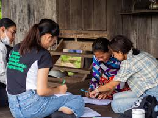
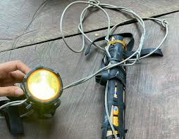

Aims to improve food security in the region through forest and farm protection
Food is expensive - especially fruit. The supply doesn't meet the demand as produce is locally grown on a small scale to be sold at local markets.
1 or 2 households buy produce from all others in the village and sell to large market buyers who potentially export it to Vietnam
Many families practice swidden - shifting cultivation + raising plants
Forests are cleared and burned which establishes agricultural land - this is then cultivated with rice.
This is inctercropped with lots of crops and moves on to allow other areas to recover
It eventually returns to the original farm site
In the past, new forest would've been cut, however now its protected under area legislation
Rice farms are the main form of subsidence
Sold mainly in village for income
Range of sizes
Smallest is 20m squared
Most common size is 5,000m squared
Largest size is 10,000m squared, this is the least common
Methods
Rice grown in water
Land dammed to collect + retain water from wet season which helps during the dry season
Modern Methods
Grow rice which needs less water
Families grow rice on same area of land and help eachother manage it
Farms are organic - no use of fertiliser or pesticides
Current Situation
Many meals are rice based - affordable due to the rice farms
Served with veg - meat if affordable
Spices used to enhance flavour
Fish are abundant in local Ou Te River
Fish often included in means
Fermented fish (by bacteria with salt) can last for years in airtight containers - god option for families struggling to afford to eat
Nets to catch fish are made from readily available material like bamboo
Many people work as labourers on others' rice farms for income
Only 1 harvest and wet season per year means that each harvest needs to be successful and provide food for a household for a year
Each household makes their own rice wine - dangerous if not made correctly and can lead to ill health
Dangerous due to lack of good healthcare facilities - lack of doctors so health risks more severe
Impacts of climate change are being experienced due to El Niño effect - more severe weather patterns
Changing rainfall patterns impact smallholder farmers the most
Large impacts when they struggle to secure diversified food + income
Large volumes of rain can submerge rice farms for too long - can cause them to spoil
Too little rain = less crop growth
Transport
Overview
Majority of roads are dirt tracks
Suspension bridge across Ou Te River - not secure
Floods during wet season - risks cutting off these routes + communities
74% of roads are rural - motorbikes main form of transport
Pu Ngoal is a 5-20 minute drive from Toul village markets - easy access on Motorbikes so able to sell produce
1 hour drive from Senmnanorom town markets
Road upgraded to red gravel by Australian gold mining company - increases reliance on countries more powerful than them
Schools open at 7am - students walk or sit on the back of motorbikes
They cross the suspension bridge which has a risk of being cut off in wet season
Primary school lasts for half a day whereas secondary lasts for approximately 6 hours
Medical centre in Toul village
Government run
No highly skilled medical professionals
Limited as to what it can offer due to remotedness of area
Transportation challenging – road conditions treacherous if someone falls ill at night
Dr comes out to treat patients unless they can afford to get to medical centre
Current Situation
Motorbikes currently most common form of transport + collecting resources
Every family owns 1 or 2 motorbikes / shares w/ neighbours
Tyres can get stuck in dirt road – prevented by wrapping chains around them
Dirt roads can be in poor condition esp in wet season
Become damaged + inaccessible
Affects access to surrounding areas + attendance at school
Factor for low education rates
Suspension bridge key transport point, esp in wet season
Connects Pu Ngaol to other homes + farms in village + schools
Bridge can get dammed when water level rises too high – prevents people crossing
Bridge not used in dry season – can pass through river area due to low water level
Costs 137 million riel – approx $33,000USD
Funded by govt + community members
Made from good quality timbre – reduces risk of termites + steel cables
Not as sustainable
Digital

Overview
Mobile phones accessible in rural Pu Ngaol
Wider digital Servies + skills lacking
Digital tech helps tackle illegal activities in forest protection
Digital infrastructure and access rapidly increasing
2021 – mobile coverage extends across whole population
96% covered by 4G
Lower internet access
2019 – 50% households have internet access
8% have computer at home
30% rural households have internet access
Lack of digital access highlighted importance + challenge of digital literacy during COVID-19
Govt moved teaching to online mode
Students had to learn online from mobile phones - not all families had access to mobile phones which led to a decline in education rates in COVID
Only 30% of population have basic digital skills – eg. Using spreadsheet
3% - intermediate skills – connecting + installing new devices
Cambodia is a partner country of UN program on reducing emissions from deforestation
2017-2026 strategy
Sets out aims to help reduce country’s emissions
Avoiding carbon emissions and fostering carbon sequestration (recycling)
Advances in geospatial tech + AI help combat illegal activities + identify disturbances in real time
Eg. Drones used for heat sensoring + monitoring animal numbers
Current Situation
Many people have access to basic mobile phones
Smartphones uncommon
Mobile connectivity very good in rural area – through metafone
Local shop nearby in Toul which sells credit for 4,000 riel ($1USD) to buy around 2GB data – typically lasts a week
Banking institution Wing available to transfer money + pay for goods
Widely used in rural areas due to low cost + ease + suitability for transferring small amounts of money via text
No laptops / tablets or access to broadband
Local school is all paper based
Keo Seima Wildlife Sanctuary - one of Cambodia’s largest and most successful REDD+ projects
‘avoided deforestation model’ - uses satellite data to model forest loss that could’ve taken place
Data is used to generate carbon credits - purchased to offset carbon emissions
Profits are used to support the protection development of communities in and around the Keo Seima Wildlife Sanctuary
Rangers employed by the government conduct forest monitoring and protect the forests from illegal activities (logging, mining and hunting)
Communication essential for the safety of the rangers, and coordination and deployment of services in the forests
No mobile reception in the forests
Radio communication only reliable form of communication
70% radio coverage
Radio devices are typically charged by small solar panel charging systems or motorbike powered systems
Often unreliable as batteries run out quickly
Built Environment
Overview
Traditional Bunong houses are circular, narrow and tall with thatched roofs
The houses in Pu Ngaol are more similar to a traditional rural Khmer Cambodian house
Built square / slightly rectangular - almost entirely of wood and a corrugated tin roof
Sometimes a balcony platform or an area underneath to sit outside
Half the space in homes are open, for families to sleep and sometimes cook in the one area
Traditional houses in Cambodia are built on raised stilts with access via stairs or ladders
Protects them from flooding in the wet season
Allows wind to pass underneath that creates a natural cooling effect
Wood - most common material used in rural construction, particularly houses, fences for livestock and handicrafts
Concrete rare in Pu Ngaol
more common in cities where the Mekong and other rivers are dredged for their riverbed sand to mix into concrete
Sometimes concrete or clay fired bricks used in rural areas for more expensive houses for a modern look in combination with wood
Timber is cut using diesel powered chainsaws
Buffalo carts / walking tractor used to take the timber back to village
Used to be a saw mill - closed due to the crackdown on illegal logging
Carpenters and builders in rural areas aren’t formally trained
Learnt skills from older generations with skills in the village
Skilled community members volunteer their time and coordinate the construction of any new homes
Smaller houses - skilled people aren’t hired + community members work together
Skilled people typically hired for larger buildings, often from surrounding villages or Vietnam
Current Situation
108 houses
Not close together and have own outdoor space for farming managed by the family
2 / 3 generations of same family commonly live in same home
Pu Ngaol’s Community Meeting Hall
Features:
open plan
concrete structure
corrugated iron roof
squat toilet facility connected to a septic tank
Wire mesh is in place of the windows to allow air flow throughout the space
Closest medical centre is in Toul Village
The Memang Primary School rebuilt in 2018
Made from concrete
three classrooms
a squat toilet and handwashing facility
Holes in upper walls - common feature
no cost cooling feature - allows natural air flow and heat to escape
Angled downwards to stop rainwater from entering classroom
Metal grates instead of windows to allow cooling air flow while keeping the classroom secure
Older buildings made from harder wood are in good condition
Availability of hard wood from the forests have been in decline
Newer structures made from softer wood - more vulnerable to termites
Some buildings in village have concrete bases beneath each wooden stilt to reduce the risk of termites
Termites also target bamboo
Fast growing
Community members generally cut older bamboo during a week long period when bamboo is stronger and the sugar content is at its lowest
Soaked in water and mud for 1 week - 20 days before being used in construction or scaffolding
Typically grows close to homes in the village
Less available due to overuse or clearing to make room for farming
Waste
Overview
Waste management prevents environmental damage & health risks
Evolving issues with landfills & burn piles
Aim: Reducing & Recycling waste
Aluminium & agricultural waste can be repurposed or sold
E-waste (e.g. Batteries) can only be used once
Economic growth, urbanisation & rising populations lead to more waste
Approx 44% goes to landfill - bad for the environment
Waste Summit Cambodia:
Annual summit gathering relevant stakeholders in the waste industry
Discusses waste solutions
2023 Theme: ‘Why Waster Separation Matters’ - Covered issues of current solid waste management systems, damaging environment & health
Very limited management in Cambodia, commonly none in Rural areas
Major cities have organised management systems with bin collection
Goes to landfill without treatment
Rubbish pickers earn a living collecting bottles/cans/ect & selling them at depots
Most exported to Thailand, Vietnam, Malaysia where its cheaper to process the materials
Energy is expensive, recycling is not a priority for the money
Senmonorom has no facilities for processing/recycling waste
enmonorom has no facilities for processing/recycling waste
enmonorom has no facilities for processing/recycling waste
Collabing with Ministry of Environment, collected over seven tonnes of hazardous e-waste in the past 4 years
E-waste exported to Spain, South Korea as Cambodia lacks facilities to process it
Current Situation
No waste management system in Pu Ngaol
Most solid waste collected by women & burned in a pile outside homes
Primary & Secondary schools have brick incinerators for bags, bottles & food
Most is plastic & foam that causes toxic chemicals
Some people sort waste and sell aluminium cans to collectors who visit the village & export the cans to Thailand, South Korea, Vietnam, China & Malaysia
4 Cans sold for 100 riel (aprox $1.25 USD)
Plastic bottles sold or repurposed for fishing tools, food storage until they discolour
Most e-waste is disposed with regular trash
Used batteries sometimes discarded on the ground
Old functional devices are sometimes resold
Agricultual waste: Leaves, straw & husks left after harvest
Hulls & Shells removed during crop processing (e.g. rice husks)
Rice husks sold or used to feed pigs/ducks
Cow dung collected & used as fertilizer for rice paddies & bananas, can be sold by kilogram
People without cows will buy the fertilizer
Energy

Overview
Capacity to connect all of Pu Ngaol, only half the community have access to the energy grid
Members rely on reusable batteries & firewood for energy & cooking
Cambodia: Energy delivered by Electricity Authority (autonomous state-owned agency)
Approx 55% of Cambodia’s energy supply is imported from surrounding countries
Cambodian Government supports increasing renewable energy production
2020: Electricity generation was 51% non-renewable (mostly coal)
Most renewable energy (45%) comes from hydro & marine power mainly on the Mekong River
Cambodia has significant biomass resources from agricultural residues, rubber plantation forests & tropical trees (fast-growing)
Wind capacity is too low for large-scale wind farming
Since 2005: Transmission lines have been extended to supply isolated areas with cheaper energy
In 2022: Approx 1.14 million rural Cambodians still lacked access to reliable energy
Cambodia has high solar potential (1.2 - 1.6 MWh per square meter a year)
Estimated technical solar potential: over 8,000 MW
Cambodia’s first 10 MW solar power plant began operating in 2017
Solar capacity remains low but has been increasing over the last 5 years
China has bult dams on the upper Mekong River since 1991 with a current total of 11 mega-dams
Erratic dam management has increased downstream droughts & flooding
Since 2019, Thailand, Cambodia, and Vietnam have experienced the worst ongoing drought in history, despite normal precipitation levels in China
Ecological habitats, such as the Cambodian dolphin in the Mekong River, have been damaged
The livelihoods of millions, including Indigenous & ethnic minority communities, have been undermined
Fisheries, a critical protein source in Cambodia, have also been negatively affected
Current Situation
Power lines recently installed in Pu Ngaol
Capacity to connect the community to the main grid via substation
Currently only half are connected to the grid
Approx 415,200 – 1 million riels to connect the others to the grid
Others rely on solar, lithium batteries or jump the grid via houses that are connected
Members with access to the grid sometimes lend & charge batteries
Businesses sometimes charge phones (2,000 riel per charge)
Lead acid 12v car batteries (reusable) & single use batteries are commonly used for household uses (lamps)
Batteries purchased at shop at the Community Hall
Primary Fuel Source: Firewood
Collected from nearby forest
Used for cooking & boiling water
Open fire or clay oven
Families collect wood daily, sometimes using motorbikes (lasting 2-3 days)
Gas
Small gas stoves with canisters
Singe-use or refillable canisters available at shops
3-5 litre canisters cost 12,000-15,000 riels to refill
Refrigeration
Rare in households
Some use ice boxes for meat storage
Shops may have refrigeration for ice cream & drinks
Primary school teacher’s house has a chest fridge/freeze for selling frozen goods & sweets to children
Energy costs for this are covered by the teacher & three additional households - no government or school funding provided
Water
Overview
Lack of clean water for homes and agriculture, risks of contamination and available storage
The government plans to provide clean water by 2025
Bottles of clean water can be purchased for 16000 riel
Can swap a bottle for a full bottle for a lower price of 2500 – encourage recycling to save money, increase cash for the community
Rainwater is collected into large plastic drums with 200-300litre capacity
Rising water levels are often unpredictable and dangerous
Can be solved to reduce risk and make it safer and more accessible
No common form of water treatment other than boiling
Current Situation
8 public boreholes equipped with hand pumps
static groundwater level is approximately 5 m below ground
static groundwater level is approximately 5 m below ground
boreholes are approximately 30-40 m deep that can pump up to a maximum 4 m3 per hour
Rarely used for drinking as they contain mud, hard water (high calcium carbonate content) and iron
Water only suitable for small scale agriculture – only used domestically as a last resort
Rainwater collected during the wet season via makeshift channels off corrugated iron roofs into large plastic 200-300 litre drums
Most people have two or three storage jars
One jar can last between three days to a week for household use (cooking, drinking and washing)
Cement storage jars cost 150,000 riel (about $40 USD) to buy and deliver to a house
No covers - leads to contamination from dirt, insects and potential bacteria
Rainwater often used for washing – boiled if used for drinking
Women are often responsible for collecting water - will take containers, via walking or motorbike, to groundwater wells and the river
Households can spend at least 4 hours, every 3 days, collecting water
River water can also be purchased via a big delivery tank on a truck
pumps river water into the tank and is driven around to sell water direct to people’s homes
Rice, fruit and vegetable farming is significantly relied upon for livelihood and income in Pu Ngaol village
Rely on rainwater in the wet season - makes them extremely vulnerable to climate effects
longer dry seasons, shifting of beginning and end of seasons, changes in rainfall, leading to changes in crop productivity
Community members who live near the river can use the river water freely for agricultural purposes especially during the wet season
others supplement with water from the groundwater pumps
Livestock in the village are allowed to roam free during the dry season
Farmers will lead large livestock to the river – causes contamination
Shallow wells and reservoirs are also dug and lined with PVC to provide water to smaller livestock such as chickens and ducks
Sanitation
Overview
The government in Cambodia aims to provide universal sanitation by 2030
Not on track to meet it
Stats:
61% of rural population have access to basic sanitation and hygiene services
Over 25% of rural Cambodia don't have access to sanitation services and must process open defecation
Most common toilet is a pour/flush squat latrine that uses water for flushing
toilet paper is uncommon, expensive and also considered unhygienic
Poor hygiene access increases the risk of water-borne and faecal related diseases
Diarrhoea is the second largest cause of infant and under 5 mortalities in Cambodia
Current Situation
Only 18% of the households in Pu Ngaol have access to a toilet
There are 20 household toilets and pone public toilet in the community hall
A squatting pan is connected to a septic tank - concrete ring pit for faecal storage
Once a pit becomes full, another pit is dug next to the first one
The pits are unsealed - contents leach into the groundwater
Toilet access can cost between 2-2.5 million riel per toilet, approximately half a community members annual salary
Those without access to the toilet will walk into the forest for privacy, where they are at risk of mosquito bites, insects and snakes